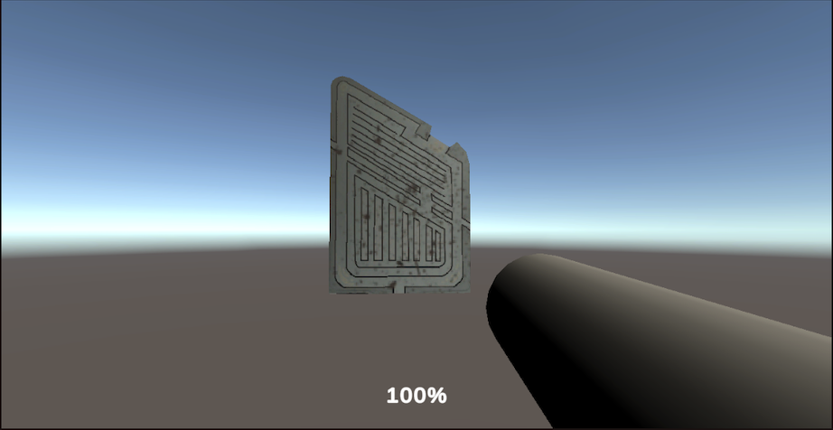
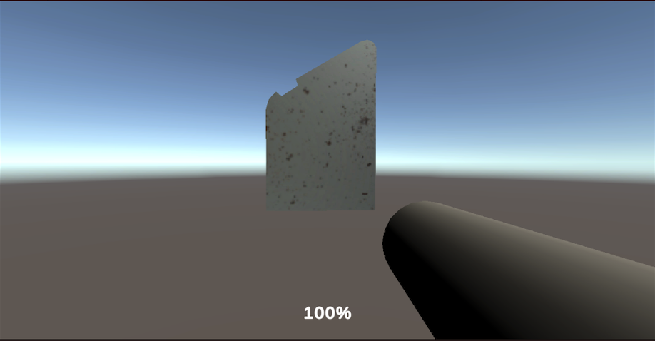
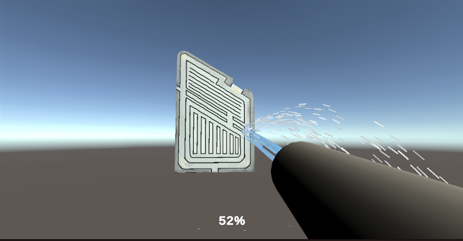
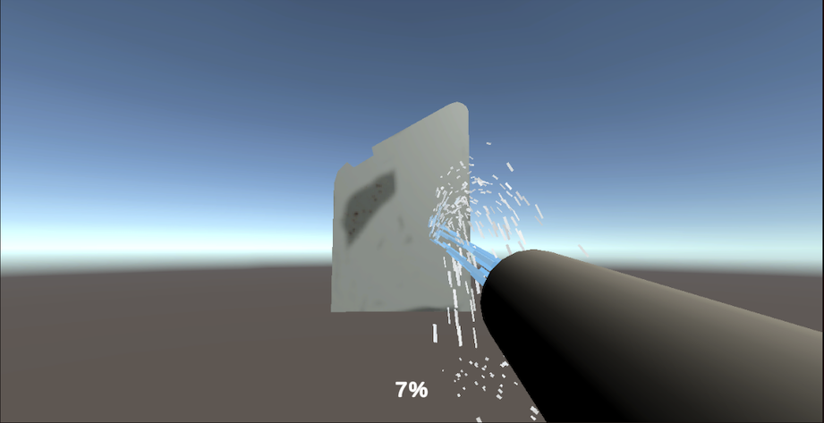
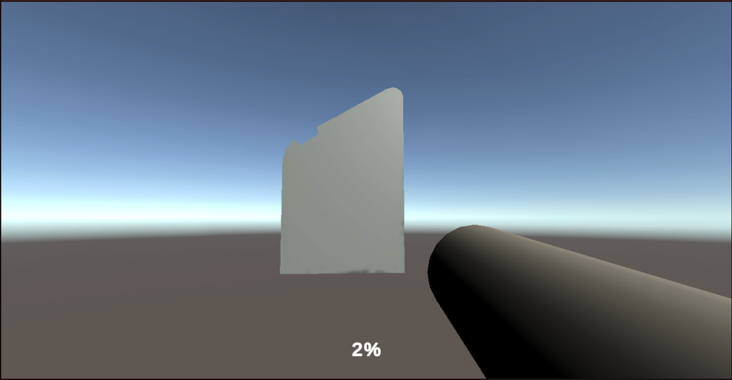

CS 184: Computer Graphics and Imaging, Spring 2023
Final Project Report
David Ge, Matthew Lu, Adam Tangonan, Jenny Mendez Mendez
PowerWash Simulator
Abstract
ABSTRACT
- We created an interactive simulation game within Unity, where the objective is to clean a car’s floor mat using fast-moving, pressurized water spewing out of a hose. We used a large number of particles in order to achieve a fluid simulation that was similar to water by using a particle system to portray water coming out of the hose. The floor mat shader contained 3 main properties including the Main Texture, Dirty Texture, and the Dirty Mask. The UI involved a general Menu scene and the elements for the Main Game scene. There is a percentage marker that keeps track of how much percent of the mesh has been cleaned (50% for each side of the mesh).
Technical Progress
TECHNICAL PROGRESS
- We used a system of numerous particles in order to have a fluid simulation of the pressurized water coming out of a hose. We had to apply gravity as well as collisions between the water particles and the surface of the object that we were power washing. Each individual particle had to have a 3d rigidbody for collisions as well as a starting velocity to simulate the pressurized environment of the hose. The water particles also needed to act like water after it has hit the object, where it would lose most of its momentum and remain on the ground for some time. This had to be done though applying both a dampening force as well as a bounce force to the particles, thus they would continue acting and colliding around after the first collision with the object. Afterward, it would dissipate after a set lifespan when it would have mostly lost all of its momentum from the pressurized hose.
- The overall idea of our technique is to paint a texture by assigning it to another texture. Some things we needed to think about are the location of the dirt on the object when the player clicks on the object, as well as flipping the floor mat.
- We used Unity’s built-in scene manager and event system. We implemented a camera following the player’s rotation as well as the player’s movement. We did this by setting the camera where the player is and whenever a mouse movement is detected, the player and the camera would rotate accordingly. We tried two types of movement/camera systems, one with lerping for the camera whenever it detects mouse movement and one with standard rotation using Euler quaternion.
- Since we are painting a texture, we would need to create and store three textures: a clean version of the floor mat texture, a fully dirty floor mat texture, and a dirt green mask of the floor mat. Thus when the player is cleaning the object, using SetPixel, it would assign to another texture.
- We casted a ray from the mouse position to hit the object. It was also essential to convert the UV coordinates to pixel coordinates. This was also where the water needed to travel to in order to clean the object.
- In order for the player to clean the other side of the object, we added an animation for it to flip 180 degrees by pressing the space key.
- In order to clean one pixel of the object, we loop through the dirt brush and multiply the hose’s pixel color and the dirt mask’s pixel color of a given position.
PROBLEMS ENCOUNTERED
Problems Encountered
-
- Setting up the project required an assortment of trial and error regarding the Unity libraries and add-ons involved. We tried watching different YouTube videos in order to solve issues with Unity. One of the major issues we stumbled upon was ensuring the shaders worked properly. The main shader for the material was staying Pink/Magenta, even though we edited the main shader for this prefab. The solution to this issue was adding Universal Render Pipeline Asset, Universal RP, 2D Sprite, CineMachine, Probuilder, and TextMeshPro. We also needed to run the Unity Project using Unity 2020.3.0 version.
- There were numerous things that were buggy with the simulation of the water, with one being that the particles were seemingly extremely erratic and would collide with itself or each other too much. This has to be fixed through making a new collision matrix where different layers couldn’t collide with each other and twerking the self collision with itself. Another issue was that the water would instantly disappear once the nozzle was off, which isn’t realistic. We had to make sure that when the nozzle was turned off, there would be no more water coming out of the hose, but the water already shot out would still remain and act like water. This was fixed by not deleting the entire simulation as an entity, but rather stop the creation of new particles and let the old particles dissipate by themselves.
- Buggy player rotation when moving the mouse in which the rotation would lag behind mouse movement, making everything feel laggy. We fixed it by creating another movement system in which the rotation is instant without using lerp.
LESSONS LEARNED
Lessons Learned
-
- We learned ray casting between a mouse click and the 2D object. By editing the Textures, getPixel(), SetPixel(), and the shader, we could mix the texture of the clean and dirty floor mat to implement a fun cleaning game.
- In regard to shader graphs in Unity, we learned how to incorporate elements for shaders including: ‘inversion of colors’, ‘multiply component’, and ‘add component’ to work alongside the Sample Texture 2D elements.
- Regarding other visual factors, it was also necessary to choose Sprite (2D and UI) as well as Filter Mode = Point (no filter) in order to ensure the quality of the mesh and textures looked the best they could.
- In order for the material to be prompted and shown on the objects, we learned that it is necessary to change the project settings to Universal Render Pipeline Asset 3D.
Results
RESULTS
- Below are our final images of our final PowerWash Simulator game:
|

100% Front Side
|

100% Back Side
|
|

52% Front Side
|

7% Back Side
|
|

2% Total
|
Resources
RESOURCES
CONTRIBUTIONS
Contributions from each team member